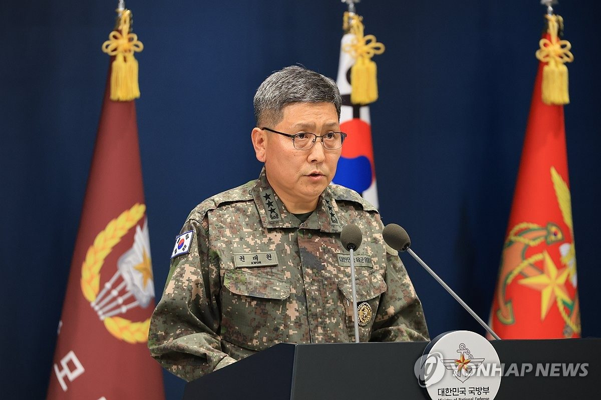
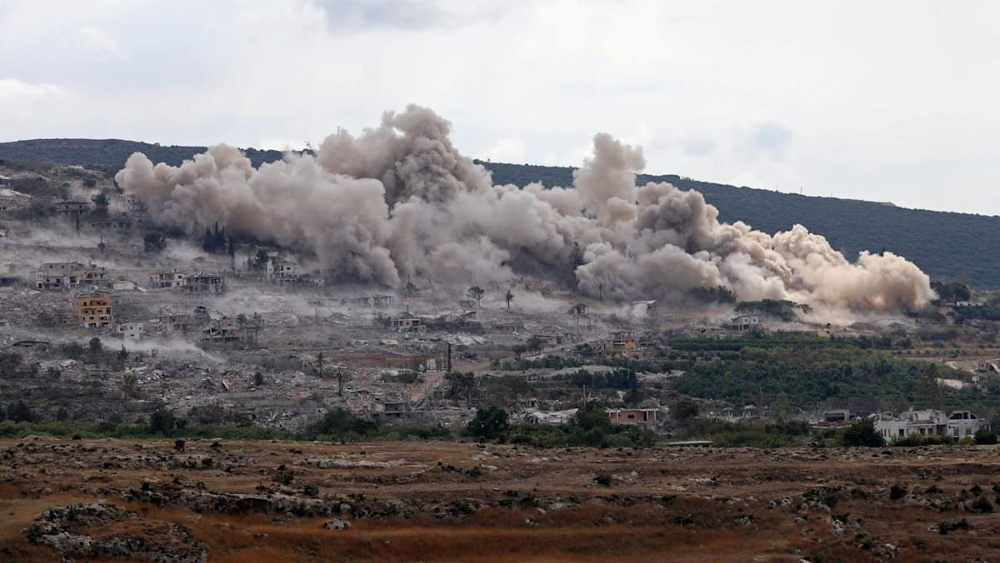

Russian drones hit Kyiv science academy in daytime raid
28 Sep 2026
AP / Reuters / CNA: A high-speed drone smashed into Ukraine’s National Academy of Sciences in central Kyiv on Monday, with flames and ladder rescues from upper floors. President Zelenskyy put nationwide toll near nine dead and more than 80 wounded across strikes that also hit Dnipro, Zaporizhzhia, and other cities. Foreign minister Sybiha called daytime targeting of a scientific workplace cynical as the war grinds through year five.
Open CNA

Seoul: North Korean mines highly likely in DMZ blast
28–29 Sep 2026
Yonhap: South Korea’s military, with the U.N. Command, said crater, flame, and injury patterns strongly point to North Korean land mines in last week’s DMZ explosion that left three soldiers hurt. Vice chairman Kwon Dae-won vowed full accountability and “corresponding measures” if the final probe confirms Pyongyang’s mines south of the Military Demarcation Line. Parallel desk: two North Korean POWs from Ukraine are reported in South Korean intelligence care.
Open Yonhap

Israel finishes Mansouri blast run; Lebanon calls it massive
28 Sep 2026
AFP / CNA: Lebanese state media reported a massive Israeli-set explosion in Mansouri, Tyre district, with smoke visible from surrounding villages. The Israeli military said it completed an operation that dismantled more than 600 “terrorist infrastructure” sites and eight underground routes. Beirut frames the pattern as systematic village destruction inside a June ceasefire that still leaves a self-declared Israeli security zone.
Open CNA
Iran says no further US talks after Trump rejects Hormuz plan
28 Sep 2026
Al Arabiya / PBS / Independent: Iranian state media said Tehran’s UN team has no plan for more direct US talks after President Trump publicly rejected Iran’s latest Hormuz reopening terms. Mediators, including Qatar channels, still work an indirect track. Shipping threat posture remains elevated while both sides wait on a formal mediated reply.
Open Al Arabiya
Iloilo City extends school mental-health net to teachers, parents
25–28 Sep 2026
PNA: Mayor Raisa Treñas directed expansion of the city’s RAISE mental-health program beyond students to teachers and PTA parents after meetings with public and private schools. Pitch: train teachers for early warning signs and keep home continuity after school counseling. Free city counseling stays weekdays at City Hall; parents read this as adult support, not another poster week.
Open PNA
Malaysia links Health and Education on bullying, self-harm
28 Sep 2026
The Star: Malaysia’s Health and Education ministries announced a joint push to curb student bullying and self-harm with shared protocols across schools. Parent read for PH households with kids abroad or ASEAN peers: ministries are treating digital and peer harm as one operational problem, not separate silos.
Open The Star
NCMH school caravan still the national youth-MH track
21–25 Sep 2026
Philstar / PNA: National Center for Mental Health chief Dr. Noel Reyes kept pushing school tours for students, parents, and educators after campus violence spikes and a hotline that has quadrupled since pre-Covid. DepEd’s Angara framed a youth “mental health epidemic” and asked teachers to act as foster adults for isolated teens. Parent ask: know the school counselor path and the NCMH crisis line before the next scare week.
Open Philstar
Asiad board: PH 2-2-10 after sepak, esports, boxing day
28 Sep 2026
GMA / Philstar: Rain-hit Monday in Aichi-Nagoya lifted the Philippine tally to 2 gold, 2 silver, 10 bronze (about 16th). Carlos Yulo’s floor and vault golds still head the gold column. Fresh medals: sepak takraw men’s regu bronze plus women’s doubles final berth (at least silver), SIBOL Honor of Kings bronze, Carlo Paalam’s 55kg quarterfinal win (sure bronze). EJ Obiena pole vault and other Tuesday starts remain on the board.
Open GMA
Eala 6-1, 6-0; next Garland. Paalam to semis.
28–29 Sep 2026
Philstar: World No. 18 Alex Eala routed Thailand’s Patcharin Cheapchandej 6-1, 6-0 in Round of 16 on a covered court after a five-hour rain delay, then draws Chinese Taipei’s Joanna Garland in the quarters. Eala/Rivera doubles open Tuesday vs Hong Kong. Parallel: Carlo Paalam took a split decision over China’s Jiamao Zhang for a boxing semifinal and locked bronze.
Open Philstar
Starship Flight 14: first orbit + 26 Starlink V3, then early splash
28 Sep 2026
Space.com / CBC / ABC: Starship lifted from Starbase about 8:48 a.m. EDT, reached orbit for the first time, and deployed 26 operational Starlink V3 satellites. Controllers cut the planned ~10-hour / six-lap profile short after health checks, targeting Pacific splashdown after roughly three hours instead of near Chile on the full timeline. Booster recovery and heat-shield lessons feed the next flight; Artemis cargo readiness remains the longer gate.
Open Space.com
Garmin Cirqa band ships screen-free; ring filings near
Sep 2026
Garmin Blog / Mashable / Tech Advisor: Garmin’s Cirqa Smart Band sells a Whoop-shaped, screen-free tracker with no subscription, feeding recovery and load into Garmin Connect. Parallel regulatory filings in Brazil and elsewhere list Cirqa ring sizes, pointing to a late-2026 / early-2027 ring SKU against Oura and Samsung. Desk take: software-plus-band stack, not another Fenix headline.
Open Garmin